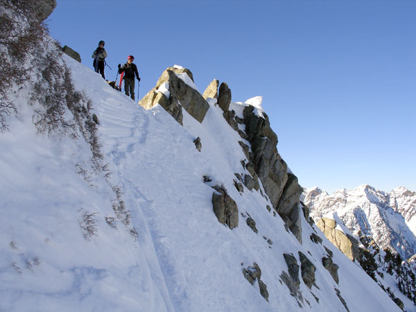

|
Sunday the 30th
Mineral Fork
Morning half day in the fork where our team was a bit slow
moving from the previous days schenanagens. Sore hip flexors weren't
enough
to discourage some poor route finding that ended with us booting
up some of worst snow imaginable. Another wave of
fog socked us in so dense trees became our best evacuation route.
Helmut
instigated
some creative switchback cutting near the end of the trail which
led to some entertaining ski acrobatics and quality one on
one with the local shrubbery.
Saturday the 29th
Days, Main Days, Hallway, Ivory Flakes, Cardiff
Definite sundowner of a day. Though I feared the dreaded Utah "dust
on crust" syndrome, these areas were well filled in and presented
some fantastic skiing. By the time we arrived in upper days, ALL
my favorite "secret" lines had been skied. The more
standard,
open
shots
were
untracked?
We
went straight to main days to find some solitude, but arrived at
the same time as several other groups. After a couple runs we planned
to hit banana Days to escape the hords, but the hords started heading
to Banana
days too,
so we decided to bail out of Days entirely and head into Cardiff
Via the Hallway, which we discovered some others had decided as
well...
When we arrived in Cardiff Fork, we had it all to ourselves. Only
a few mysteriously erratic lines marred the face of the flakes
so
under
a clear, mostly
sunny sky we headed up. With each step, the visibility noticeably
deteriated. By the time we reached the pass into
Mineral, we were completely socked in. The fact the the sun seemed
to be setting didn't really cheer us up either. But after a few
patient moments, in which some finger pointing occured, a slight
window of visibility appeared. We dropped, and were estatic to
find that after a few turns, we came out of the cloud and were
staring down 1000 vertical of perfectly visible creamy powder.
At the bottom we rejoyced, geared up, and feeling quite satisfied,
toured up to Cardiff peak. As we hit the summit, the christmas
lights on the snow station were shining brightly through a foggy,
deep blue dusk. We skied fun breakable crusts
by headlamp all the way to the van.
Professor Ragdoll staring down the Hallway
Saturday the 22nd
Red Pine and Maybird tour
Now that I've read a bit more of the manual, I figured that white pine would
be an excellent place to test out my new Sony Cyber Shot camera. To avoid the
heli poopers, we veered towards redpine instead. First, though, we marveled at
the new Scotties bowl slide path. It's so amazing to see such a familiar place
completely re-arranged, mowed, devastated and all sorts of other adjectives.
Nature is so amazing...
I volunteered Helmut to lead this part of the traverse.
Is that a banana in your pocket or are you happy to ski me?...
The Evil Dr. Fu Manchu took a 50 foot slide for life which was
a perfect opportunity to test out the new rapid fire mode on
my camera. As you can see in the third frame, the Dr. recovered
quite nicely.
The Dr. Back on his feet for the rest of the run, smog in the background.
Traversing over to a notch in the redbird ridge.

Dropping in to redpine lake over no name pass.
January 18
Old Blue Mountain Resort, Abajo Mountains
I've always looked at these mountains on my way back from
Durango, but have never had the time to explore them. This time we
succumbed to the mystery and went for a quick, exploratory tour,
starting near the old "Blue Mountain" ski resort. Turns
out, these mountains aren't as shrouded in mystery as they are shrouded
in dense foilage! If I was a local Abajo Mountain skier, I'd definitely
invest in a good chainsaw. Once you've clawed your way through the
bushes the views are spectacular, with the La Sals to the north,
red rocks in between and the tasty San Juans to the east. Check It
out, bring eye protection!
Big B nears the top of Peak 10,755 above the old Blue Mountain
Resort. The La Sals are in the background.
January 17
Backcountry from Wolf Creek Resort

Estewardo tests out the new split board
above the hourglass.
January 16
North East Glades by The Hourglass, Wolf Creek Pass
Iced trees near Wolf Creek Pass stand watch
over priceless surface hoar crystals.
January 15
Telluride Ski Resort
$62 for a HALF day lift ticket? Just
another indication of fucked up priorities in the ski industry.
It ain't about the skiing anymore, Muffy!
January 14
Dallas trail, North of Mt. Sneffels
The Iron Monkey that watches over the highway from La Sal Junction to Telluride.
It's realistic face seemed so out of place as I wizzed by at 70 mph that I
had to stop, go back and take a look.
Big B gets chased by an angry steel moose down the highway.
January 9
Mill Creek rain fest
January 8
Failed mission to drop cornices in Monitor Bowl
Spagetties rides the reutch block
down on the November layer after some serious hopping.
January 6
Neff's Canyon Powder Tour
January 2
Gobblers Knob
The avy report said that storm totals from the past 4
days are 3 to 5’ in
the Cottonwoods, but there was little over a foot from that period
in the Porter Fork area. We skied up the Bowman
fork
trail, took some runs in the cabin shot area, dug a snow pit
on belay, summitted, and skied a long line down into gobblers
through
challenging wind
drifts and powdery debris that had our quads screaming by the
end. We hit the car at dark, 6:00. ICCT: 2 hand hits
= shear 1 foot deep
|